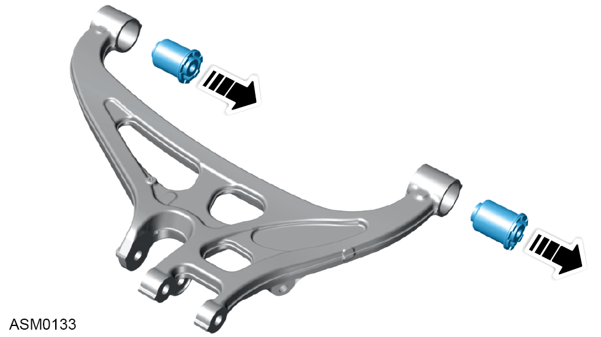
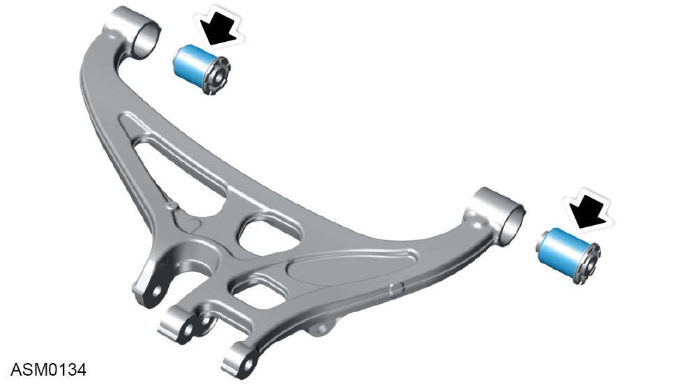
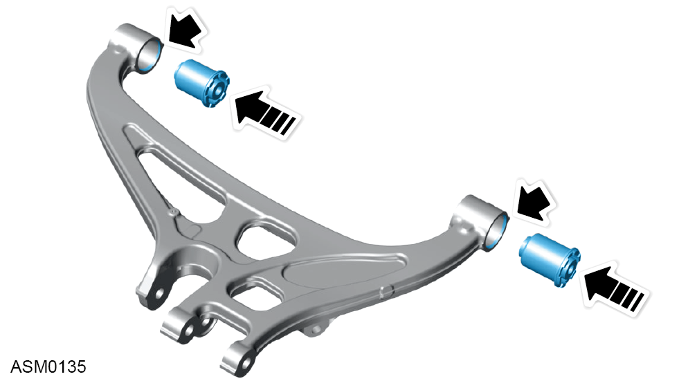

Bush - Lower Wishbone - Rear - Left Side
Print
Operation Code: 31.03.25-02
Removal
- Remove rear lower wishbone left side. Refer to procedure.

- Remove old bushes using hydraulic press.
- Bushes can only be removed in one direction. Refer to illustration.
Installation
- Installation is the reverse of removal procedure except for the following:
- Clean wishbone bores before installing new bushes.

- Lubricate bush outer surface using P80 rubber lubricant to ease installation.

- Make sure bushes are inserted into side of wishbone bore with chamfered edge.